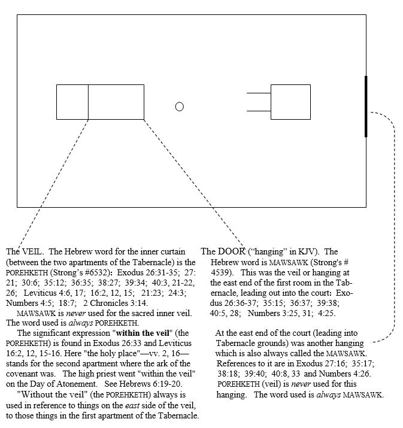

by Richard H. Snell
In her book, The GREAT CONTROVERSY Between Christ and Satan (Pacific Press Publishing Association, Nampa, Idaho, 2005) (she died July 16, 1915), Ellen G. White in her Introduction on pp. 12 and 13 claims a measure of divine inspiration. She wrote,
“…the scenes of the long-continued conflict between good and evil have been opened to the writer of these pages. From time to time I have been permitted to behold the working, in different ages, of the great controversy…”
“As the Spirit of God has opened to my mind the great truths of His word, and the scenes of the past and the future, I have been bidden to make known to others that which has thus been revealed--to trace the history of the controversy in past ages, and especially so to present it as to shed a light on the fast-approaching struggle of the future.” [emphasis mine, R.H.S.]
It appears to me that there are numerous examples in her writings in which Mrs. White shows herself to be in error. In these does she show herself to be merely honestly mistaken, or--forgive me for wondering--to be a false prophet? What we write here is written in love, and only after much prayer and study. We shall here limit our remarks to her doctrine regarding the veil which Christ entered upon His ascension into Heaven, and the veil He supposedly entered in A.D. 1844. We shall show why we think that when Christ ascended after His resurrection He entered “within the veil” into the heavenly “holy of holies” itself where the Father is enthroned--the place where Mrs. White says He did not enter until 1844. (For the sake of argument we are accommodating ourselves in this discussion to the S.D.A. idea that the temple in Heaven is separated into two rooms or "apartments" as were both the tabernacle and temple on earth--a separation in Heaven we don't necessarily believe the Bible teaches.)
Mrs. White taught--and the Seventh Day Adventist Church continues to teach--that upon Christ’s ascension He entered “the first apartment of the sanctuary in heaven” and continued to minister there until the autumn of 1844, at which time He made His move beyond the veil and “entered the most holy, to perform the last division of His solemn work--to cleanse the sanctuary” (p. 421). Her doctrine is that “…in 1844, Christ then entered the most holy place of the heavenly sanctuary to perform the closing work of atonement preparatory to His coming” (p. 422).
After referring to the unique once-a-year service of the Jewish high priest on the Day of Atonement, Mrs. White wrote:
“And what was done in type in the ministration of the earthly sanctuary is done in reality in the ministration in the heavenly sanctuary. After His ascension our Saviour began His work as our high priest. Says Paul: ‘Christ is not entered into the holy places which are made with hands, which are the figures of the true; but into heaven itself, now to appear in the presence of God for us.’ Hebrews 9:24.
“The ministration of the priest through out the year in the first apartment of the sanctuary, ‘within the veil’ which formed the door and separated the holy place from the outer court, represents the work of ministration upon which Christ entered at His ascension. It was the work of the priest in the daily ministration to present before God the blood of the sin offering, also the incense which ascended with the prayers of Israel. So did Christ plead His blood before the Father in behalf of sinners, and present before Him also, with the precious fragrance of His own righteousness, the prayers of penitent believers. Such was the work of ministration in the first apartment of the sanctuary in heaven.
“Thither the faith of Christ’s disciples followed Him as He ascended from their sight. Here their hopes centered,‘which hope we have,’ said Paul, ‘as an anchor of the soul, both sure and steadfast, and which entereth into that within the veil; whither the forerunner for us is entered, even Jesus, made a high priest forever.’ ‘Neither by the blood of goats and calves, but by His own blood he entered in once into the holy place, having obtained eternal redemption for us.’ Hebrews 6:19, 20; 9:12.
“For eighteen centuries this work of ministration continued in the first apartment of the sanctuary. The blood of Christ, pleaded in behalf of penitent believers, secured their pardon and acceptance with the Father, yet their sins still remained on the books of record. As in the typical service there was a work of atonement at the close of the year, so before Christ’s work for the redemption of men is completed there is a work of atonement for the removal of sin from the sanctuary. This is the service which began when the 2300 days ended [in 1844]. At that time, as foretold by Daniel the prophet, our High Priest entered the most holy, to perform the last division of His solemn work--to cleanse the sanctuary.”(IBID, pp. 420-421) [bold emphases all mine. R.H.S.]
[I would like to add here that in her writings and in may other S.D.A. writings, the phrase the holy place is used in reference to the first (east) room of the tabernacle, and the most holy in reference to the second room which contained the ark of the covenant. We will do well to keep in mind that in several places in the Bible the second room is called simply the holy place (in Greek, the hagia). For example, see Leviticus 16:2 in most translations and in Hebrew and in the Greek Septuagint.]
This distinctive S.D.A. doctrine is set forth in many of their official writings. For one example, C. Mervyn Maxwell, Ph.D.,in his GOD CARES Vol. 1, The Message of Daniel For You and Your Family (Pacific Press Publishing Association, Boise,Idaho, 1981), makes the same claim. On p. 183 he correctly mentions the ministry of the Jewish high priest on the annual Day of Atonement, saying,
“It was a solemn moment when the high priest drew aside the inner veil and stepped into God’s presence!” But then, misapplying the vision in Daniel 7:13-14 where Christ is seen approaching the Ancient of Days in His ascension from the mount of Olives and receiving His kingdom, Mr. Maxwell writes: “In the vision of Daniel 7 the Ancient of Days takes a seat and ‘one like a son of man’ approaches Him on the ‘clouds of heaven.’ The Ancient of Days is God the Father and the Son of man is Jesus. ..... In Daniel 7 He appears before the Ancient of Days to make up His roster of saints before coming to rescue them” (p. 241). (The bold-type emphasis is Maxwell’s.) (We must add here that Mr.Maxwell’s statement that Jesus appeared there and then to “make up His roster of saints before coming to rescue them” seems to be sheer speculation on his part.)
In his next paragraph Mr. Maxwell goes on to say:
“This traveling of Jesus from one place to another at judgment time is not unique. He journeyed from heaven to earth when the time came in the seventy-week prophecy for Him to be born and slain as our Redeemer. He will again journey from heaven to earth when the time comes for him to reign in glory as our King of kings. Likewise, in 1844, at the close of the 2300 year-days, He is portrayed as passing from one part of heaven to another when the time came for Him to make a significant transition in His service as our High Priest. “In symbolic, sanctuary language we may say that in 1844 Jesus passed from the holy place of heaven’s sanctuary to its most holy place*….”
And here Maxwell adds his asterisk! His designated footnote reads (and we put it all in bold type to emphasize it):
"Hebrews 6:19 R.S.V. and Hebrews 9:8 K.J.V. sound as though Jesus were alreadyat work in heaven’s most holy place during the first century, when thebook of Hebrews was written. The underlying Greek for Hebrews 6:19,however, says only that Jesus had entered ‘within the veil,’ as in the K.J.V.and N.A.S.B. There were two veils or curtains (Hebrews 9:3), and Hebrews6:19--as also Hebrews 8:2; 9:12, 24, 25; 10:19; and 13:11--tells us simply about‘holy places’ or ‘sanctuary.’ The book of Hebrews is concerned to tell usthat Jesus is at work in the heavenly sanctuary, but it is not concerned to say in which area of the sanctuary His is working.”
Whoa! Wait! What is he saying? He is saying that there is nothing in the Greek text of the book of Hebrews that tells us which VEIL through which Jesus passed when He ascended into Heaven from the earth. Let’s assume, just for the moment, for the sake of argument, that he is correct. Then how does he know, or any other S.D.A. teachers know, that it was the FIRST veil, the one between the court and the first room of the two-room tabernacle? Their whole argument depends on determining that it was that first veil rather than the second that Jesus passed through at His ascension from the Mount of Olives, and that in 1844 He moved on, in the heavens, passing through that one which the high priest passed through on the Old Testament Day of Atonement to get into the place of the mercy seat. This is their doctrine. But Mr. Maxwell says that the book of Hebrews is concerned only with telling us that Jesus is at work in the heavenly sanctuary and is not at all concerned with telling us in which area of the sanctuary He is working. So how is he to know that until 1844 Christ was ministering in only the first room?
Ah, the reply would come that we can learn this from the sequence of veil passes made by the high priest on the Day of Atonement in the Old Testament, since we can’t learn it from the New Testament book of Hebrews. Okay, in a moment we will go to the record in the Old Testament and we will learn, when we couple that with Hebrews, that it was in fact the SECOND veil, the one between the two tabernacle rooms, that Jesus entered upon his initial arrival in Heaven from earth, and that He has in fact been there in that second room, the holy of holies, ever since. But while we are in this paragraph, let’s take another look at just what Hebrews alone can tell us about this matter. We learn from Hebrews 9:24 that Jesus entered--past tense when the inspired writer wrote: accomplished action. When Christ ascended into Heaven He ENTERED something. What did He enter at that time? Well, the second half of 9:24 tells us that He entered Heaven itself, and that He did it to appear before the face of God for us; and the uninterrupted flow of thought as we progress into verses 25 and 26 tells us why: He entered to offer Himself, not yearly as the Old Testament high priest did with animal blood on the annual Day of Atonement, but once, at the end or consummation of the ages, to put away sin by the sacrifice of Himself. (Regarding “once, at the end of the world”--KJV, or “once at the end or consummation of the ages”--ASV, NASV, NKJV, NIV, see Hebrews 1:2 and 1 Peter 1:20 and Acts 2:16-17. It was the close of the ages marked by the sacrifice of Himself, which culminated in Christ‘s first advent and it’s victorious work.) This is something that Jesus HAD DONE when the Hebrews author wrote, and the context of 9:24 with 9:25-26 clearly shows that the event of comparison was the year by year passing of the O.T. high priest through the second veil into the holy of holies on the Day of Atonement. Read it over and over in several good translations and you will see that this is the teaching. So our High Priest passed through that “second veil” after He was raised up to sit on David’s throne (Acts 2:30-33; Ephesians 1:20-23; Hebrews 10:12-13); He entered “within the veil”--the so called “second veil”--into the presence of God, before the face of God, with His own blood with which He made the once-for-all expiation for our sins. He had taken away the first will “in order to establish the second. By this will we have been sanctified through the offering of the body of Jesus Christ once for all. And every priest stands daily ministering and offering time after time the same sacrifices, which can never take away sins; but He, having offered one sacrifice for sins for all time, SAT DOWN AT THE RIGHT HAND OF GOD, waiting from that time onward UNTIL HIS ENEMIES BE MADE A FOOTSTOOL FOR HIS FEET. For by one offering He has perfected for all time those who are sanctified. ...... ‘AND THEIR SINS AND THEIR LAWLESS DEEDS I WILL REMEMBER NO MORE.’ Now where there is forgiveness of these things, there is no longer any offering for sin” (Hebrews 10:9-17, NASV). Yes, the perfect work of atonement was accomplished and done, and from that time Christ sat down at the right hand of God, from which throne He has been reigning and continues to reign until “He has abolished all rule and all authority and power. For He must reign until He has put all His enemies under His feet. The last enemy that will be abolished is death. ..... And when all things are subjected to Him, then the Son Himself also will be subjected to the One who subjected all things to Him, that God may be all in all” (1 Corinthians 15:24-28, NASV). Between our blessed Lord’s ascension to sit at the right hand of God, until now and until His second coming, there has been no “intermediate” ministry terminating in 1844. There continues to be His ongoing ministry as our High Priest and Intercessor in the heavenly holy of holies, from His Olivet ascension until His second advent, something denied by Ellen G. White.
But let us go back to the Old Testament record and we will be able to clearly see that when the high priest entered “within the veil,” it was the second veil which he entered, corresponding to that special one separating the first room of the tabernacle from the second room. Whereas the Greek text in the book of Hebrews uses the same word for the two veils (katapetasma, or katapétasma), thus linguistically making no distinction between the two veils in the Greek, the Hebrew text in the Old Testament does make a clear and consistent difference between the word used for that special veil or curtain which separated the two rooms of the sacred tabernacle and the word for the veil or curtain which separated the court from the first room of the tabernacle.
SO LET US NOW GO TO LEVITICUS 16 AND STUDY THE ENTRANCE OF THE HIGH PRIEST INTO THE HOLYOF HOLIES. After Aaron’s sons Nadab and Abihu had presumptuously drawn near to Jehovah with strange fire and wereburned to death by Him, “…Jehovah said unto Moses, Speak unto Aaron thy brother, that he come not at all times into theholy place within the veil, before the mercy-seat which is upon the ark; that he die not: for I will appear in the cloud uponthe mercy-seat” (Leviticus 16:2, ASV). It was not to be “at all times” that the high priest entered “within the veil;” just oneday each year: Exodus 30:10; Leviticus 16:34; Hebrews 9:7.
It is extremely important to study two things here. One thing is this expression, “within the veil.” The other thing is the Hebrew word translated “veil” in Leviticus 16:2 (translated “curtain” in certain other versions).
In Exodus 26:31-35 God instructed Moses (ASV): “And thou shalt make a veil of blue, and purple, and scarlet, and fine twined linen: with cherubim the work of the skilled workman shall it be made: and thou shalt hang it upon four pillars of acacia overlaid with gold; their hooks shall be of gold, upon four sockets of silver. And thou shalt hang up the veil under the clasps, and shalt bring in thither within the veil the ark of the testimony: and the veil shall separate unto you between the holy place and the most holy. And thou shalt put up the mercy-seat upon the ark of the testimony in the most holy place. And thou shalt set the table without the veil, and the candlestick over against the table on the side of the tabernacle toward the south: and thou shalt put the table on the north side.” (Sadly and without justification the NIV and some other translations do not employ the words “within the veil” and “without the veil.” But “within” and “without” are accurate ways to exactly translate the Hebrew in these verses, as is the case in Leviticus 16:2, 12 and 15.)
The word consistently used for the first veil, the one at the entrance into the first room of the tabernacle from the court, is the Hebrew word MAWSAWK (See Strong’s #4539 in his Hebrew dictionary section). That is a totally different word from the one consistently used for the second veil, the one separating the first room of the tabernacle from the second where the ark of the covenant was. The word that is uniformly used for this special second veil is the Hebrew word POREHKETH (See Strong’s #6532).
CHRIST our High Priest entered once for all (Hebrews 9:12; see v. 7) "within the veil" for us when He ascended from earth to Heaven. Hebrews 6:19-20. That He "entered within the veil" must be understood in the light of the information above. Please observe that "entered" (v. 20) denotes accomplished action. This was written before A.D. 68. That entry over 19½ centuries ago was NOT into "the first apartment" of the heavenly Tabernacle, but "within the veil" into the very presense of God, to sit at God's hand, and to serve as both King and Priest on His throne as our Mediator and Intercessor, and will continue until the last enemy to be subdued will be death, which will occur upon His blessed return.
In the Greek New Testament the word for veil is katapetasma, translated veil in Matthew 27:51; Mark 15:38; Luke 23:45; Hebrews 6:19; 9:3 and 10:20. In the LXX (Septuagint, the Hebrew Old Testament translated into Greek about 300 B.C.) katapetasma is used two times out of ten for the hanging or curtain (the Hebrew word MAWSAWK) at the east door of the Tabernacle; and once out of seven for the hanging or curtain at the entrance to the court. For the remaining uses, it is used 22 out of 24 times for the veil between the two apartments. Abbott-Smith's lexicon says of katapetasma: "In the N.T. always the inner veil of the Temple (Tabernacle)."
When God’s holy Levites brought “thither within the veil the ark of the testimony” (Exodus 26:33), they brought it within the porehketh. When they set the altar of incense without the veil(26:35), they placed it without the porehketh, i.e., they placed it in the first room. When Aaron was warned in Leviticus 16 that he was not to go at all times within the veil, before the mercy-seat which is upon the ark (v. 2), it was within the porehketh that he could not go except on the Day of Atonement. And when Aaron brought the incense within the veil (v. 12), and then the blood of the goat for the sin-offering within the veil (v. 15), it was in both cases within the porehketh that he brought it, not within the mawsawk. The mawsawk was at the other end, the east end, of the first room.
On the Day of Atonement the high priest made his once-in-the-year move within the veil, that is, within the porehketh, to offer blood which could never take away sins. But now, once just weeks after His resurrection and not repeated yearly, CHRIST as our forerunner has entered into that which is WITHIN THE VEIL, having become a high priest for ever after the order of Melchizadek.
When the Son of God bore our sins in His own body and died on the cross, “the veil of the temple was rent in two, from the top to the bottom” (Matthew 27:51; Mark 15:38; Luke 23:45). This was the veil that in the Hebrew would have been called the porehketh. It signified that the way into the holiest--i.e., into the holy place, the cube-shaped area where God was enthroned above the cherubim--was now open. “Having therefore, brethren, boldness to enter into the holy place by the blood of Jesus, by the way which He dedicated for us, by the new and living way, that is to say, His flesh; and having a great priest over the house of God; let us draw near with a true heart in fulness of faith, having our hearts sprinkled from an evil conscience: and having our bodies washed with pure water, let us hold fast the confession of our hope that it waver not: for He is faithful that promised” (Hebrews 10:19-23, ASV).
This may be important: The expression, "within the veil" in Hebrews 6:19 is in the Greek exactly the same as the Greek expression in the Septuagint (the LXX, the Hebrew Old Testament translated into Greek about 300 B.C.) Since the author of Hebrews used the LXX in his O.T. quotations, it would appear that his use of this notable expression in 6:19 may be a direct reference to its use in the LXX. We put here, one above the other for comparison, the Greek words (in anglicized form for those having trouble reading Greek letters) from Hebrews 6:19 and from Exodus 26:33 and Leviticus 16:2, 12 and 15:
So when Mrs. White wrote that
“The ministration of the priest through out the year in the first apartment of the sanctuary, ‘within the veil’ which formed the door and separated the holy place from the outer court, represents the work of ministration upon which Christ entered at His ascension”
she was wrong about her veils and her “apartments.” When on the next page she applied Hebrews 6:19-20 to Christ as entering only the first apartment of the tabernacle, and remaining there until 1844, she was wrong. Her whole system of doctrine built on this erroneous supposition is wrong. Being a false teacher claiming prophetic insight, she would appear to be a false prophet. She and her associates have fabricated a religious system based on wrong interpretation.
Her followers immediately ask, If what you claim here is so, then what DID happen in the autumn of 1844 to mark the end of the 2300 days? It is not the purpose of this brief essay to go into that. We will be pleased to discuss this with anyone as long as it can be discussed with mutual respect for one another and with agreement that the WORD OF GOD is the only source of authority. Let us just say here that there are other and more historically accurate ways to settle this without following the Miller/White system.